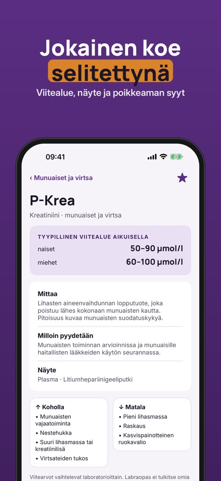
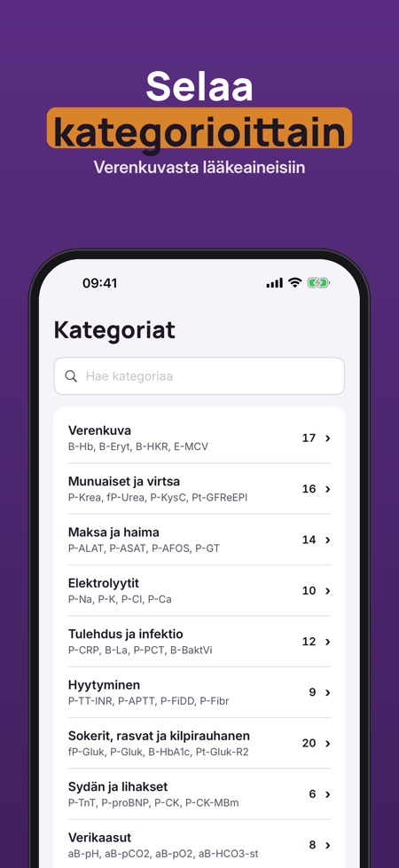

Labraopas on hakuteos hoitotyön ja lääketieteen opiskelijoille sekä sairaanhoitajille: 155 laboratoriokoetta suomalaisin lyhentein. Se on tarkoitettu opiskeluun, ei omien tulosten tulkintaan.



Itsenäinen hakuteos hoitotyön ja lääketieteen opiskelijoille sekä sairaanhoitajille, jossa on 155 laboratoriokoetta.
Viitevälit, näytteet ja putket on koottu Fimlabin julkisesta tutkimusohjekirjasta, ja jokaisen koekortin lähde näkyy sovelluksessa.
Ei, sovellus ei tulkitse omia tuloksiasi eikä korvaa lääkärin arviota. Viitearvot vaihtelevat laboratorioittain, joten tarkista oman laboratoriosi arvot.
Haku toimii lyhenteellä tai nimellä, esimerkiksi P-Krea, hemoglobiini tai CRP.
Kyllä, ja tiliä ei tarvita.
Ei. Täysi versio on kertaosto, joka avaa kaikki 155 koetta, rajattomat visat ja virheiden kertauksen sekä näyteputket ja ottojärjestyksen.
30 yleisintä koetta, lyhenneavain, yksiköt ja yksi viiden kysymyksen visa päivässä.
Labraopas on hakuteos hoitotyön ja lääketieteen opiskelijoille sekä sairaanhoitajille: 155 laboratoriokoetta suomalaisin lyhentein (P-Krea, B-Hb, fP-Gluk).
30 yleisintä koetta, lyhenneavain, yksiköt ja yksi viiden kysymyksen visa päivässä ovat käytössä ilman ostoa. Täysi versio on kertaosto, joka avaa kaikki 155 koetta, rajattomat visat ja virheiden kertauksen, rajattomat suosikit sekä näyteputket ja ottojärjestyksen. Ei tilausta.
Labraopas on itsenäinen opiskelun hakuteos. Se ei tulkitse omia tuloksiasi eikä korvaa lääkärin arviota. Viitearvot vaihtelevat laboratorioittain – tarkista aina oman laboratoriosi arvot. Viitevälit, näytteet ja putket on koottu Fimlabin julkisesta tutkimusohjekirjasta, ja jokaisen koekortin lähde näkyy sovelluksessa. Ei yhteyttä mihinkään laboratorioon.